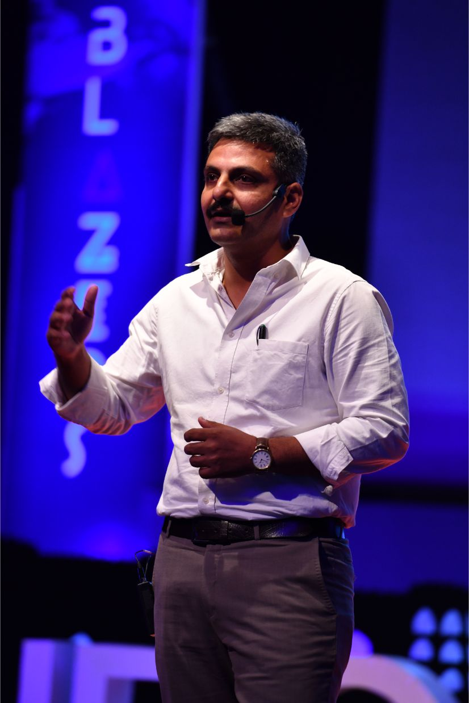
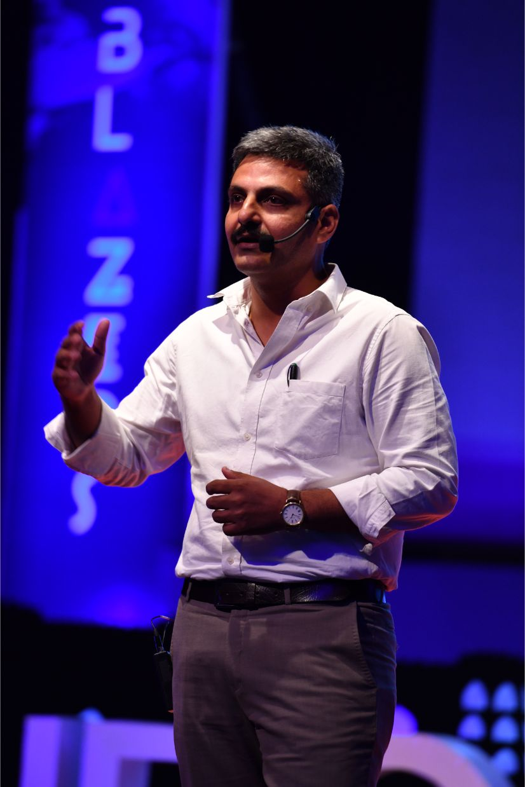

What is TEDx ?
In the spirit of ideas worth spreading, TED has created a program called TEDx. TEDx is a program of local, self-organized events that bring people together to share a TED-like experience. Our event is called TEDxUppsalaUniversity, where x = independently organized TED event. At our TEDxUppsalaUniversity event, TEDTalks video and live speakers will combine to spark deep discussion and connection in a small group. The TED Conference provides general guidance for the TEDx program, but individual TEDx events, including ours, are self-organized.
SPEAKERS


 
